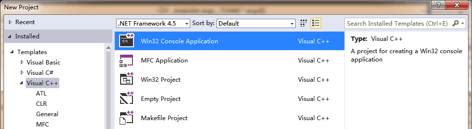
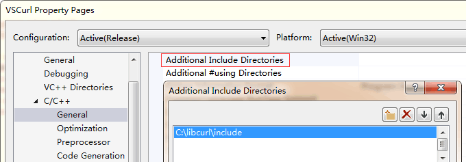
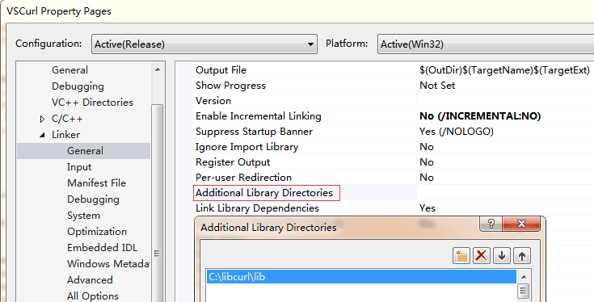
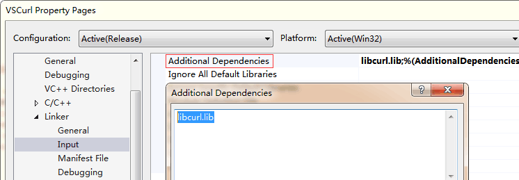

Qt 使用 curl 一文中介绍了怎么编译 curl 并且在 Qt 项目中使用，那么在 VS 项目中应该怎么使用 curl 的 dll 呢？
动态库的使用分为隐式链接和显示链接两种方式:
显示链接: 只需要
.dll动态库文件，代码中使用LoadLibrary + GetProcAddress加载函数后需要自己进行函数类型转换：1
2
3
4
5
6
7
8
9// 函数类型定义
typedef void (*DLLFunc)(int);
// 加载 dll 中的函数
HINSTANCE hInstLibrary = LoadLibrary("DLLSample.dll");
DLLFunc dllFunc = (DLLFunc)GetProcAddress(hInstLibrary, "TestDLL");
// 执行函数
dllFunc(123);隐式链接: 需要
.h头文件、.lib库导入文件和.dll动态库文件，代码中直接使用库的函数即可推荐使用隐式链接，更省事，可参考 LIB 和 DLL 的区别与使用。
VS2013 中隐式链接使用 dll 一般有两种方法:
使用
#pragma引入 lib设置
项目属性引入 lib
下面就以隐式链接使用 curl 的 dll 为例进行介绍，curl 存放在 C:/libcurl。
创建 Visual C++ 控制台程序

1 |
|
一：使用 #pragma 引入 lib
包含头文件以及使用 #pragma 引入 lib 就可以了：
1 |
|
把 libcurl.dll 复制到项目编译出的 exe 目录，运行项目，可以看到 curl 访问网络成功。
二：设置 项目属性 引入 lib
在项目的名字上 右键 > Properties，在弹出的对话框中配置需要的 头文件目录、lib 目录 和 lib 名字：
头文件目录:
C/C++ > General > Additional Include Directories
lib 目录:
Linker > General > Additinal Library Directories
lib 的名字:
Linker > Input > Additional Dependencies
通过上面三步就配置好了动态库，然后再程序中包含头文件就可以使用了:
1 |
|
把 libcurl.dll 复制到项目编译出的 exe 目录，运行项目，可以看到 curl 访问网络成功。
通过比较，是不是感觉使用
#pragma的方式更简单一些？